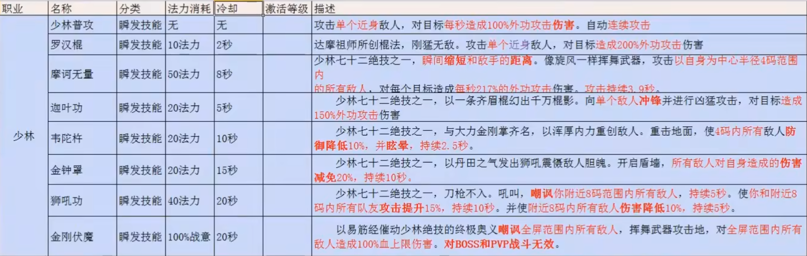
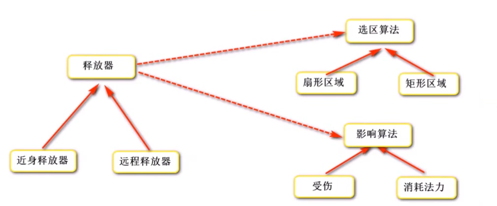
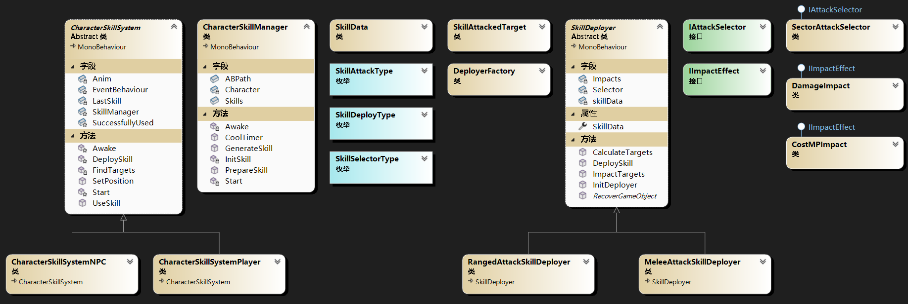

# 观前提醒
项目会在 GitHub 中开源，链接：https://github.com/Maikire/Unity/tree/main/UnityFramework/A simple ARPG skill framework
# 做框架之前的一些准备
在开始写框架之前需要有一些准备好的资源
# 角色
# UI
- 使用这个 UI 框架
- 使用这个摇杆控制角色的移动
- 有关 UI 事件的代码在下文中会讲到
- 规定：按钮的名字必须是技能的 ID
- UI 如图所示：
# 技能预制件
预制件需要放在 Resources 目录中（本文以 Resource 为例，StreamingAssets 同理）
如图：
# 选中特效
目标被选中后的特效，统一名字为 SelectTarget
# 需求分析
需求：需要一个 ARPG 游戏的技能框架，实现技能的释放。技能样式可参考以下图片：
# 技能系统的实现方式
一个技能一个类
优点：代码编写很简单、可以任意的扩展。
缺点：代码的重复度很高、数据散乱、技能较多时，代码会变得难以维护和调试
适用性：适合制作一些内容较少的小游戏
使用框架
优点：较低的代码重复度、数据集中管理、较高的可扩展性、易于维护和调试、更好的分配任务、更好的并行开发
缺点：代码编写较难
适用性：适合制作一些内容较多的游戏
# 框架设计
- 技能释放流程
- 玩家按下按钮
- 技能拥有者释放出技能
- 技能根据已经设置好的数据以及对应的算法释放
- 技能命中受击方，产生影响效果
- 技能的分类
- 释放类型：指定方向、指定目标、指定位置......
- 攻击类型：单体攻击、群体攻击......
- 选择类型：扇形 / 圆形选择、矩形选择......
- 实现技能数据的集中管理：用一个类来存放所有的技能数据
- 角色需要拥有一个存放技能数据的类，提供生成技能的方法
- 技能需要一个类，用于释放技能（创建并执行算法）
- 判断技能的命中，不同的技能有不同的算法，使用接口统一管理
- 技能的影响效果，不同的技能有不同的算法，使用接口统一管理
- 封装技能系统，对外提供简单的调用方法（两种情况：为玩家使用、为 NPC 使用）

# 代码
# 技能数据类
用于存放技能的所有数据
namespace SkillSystem | |
{ | |
[Serializable] | |
/// <summary> | |
/// 技能数据类 | |
/// </summary> | |
public class SkillData | |
{ | |
[Tooltip("技能ID")] | |
public int SkillID; | |
[Tooltip("技能名称")] | |
public string Name; | |
[Tooltip("技能描述")] | |
public string Description; | |
[Tooltip("冷却时间（秒）")] | |
public float CoolTime; | |
[Tooltip("冷却剩余（秒）")] | |
public float CoolRemain; | |
[Tooltip("法力消耗")] | |
public float CostMP; | |
[Tooltip("攻击距离")] | |
public float AttackDistance; | |
[Tooltip("攻击角度")] | |
public float AttackAngle; | |
[Tooltip("移动距离")] | |
public float MoveDistance; | |
[Tooltip("移动速度")] | |
public float MoveSpeed; | |
[HideInInspector] | |
[Tooltip("起始旋转")] | |
public Quaternion StartRotation; | |
[HideInInspector] | |
[Tooltip("释放起点")] | |
public Vector3 StartPosition; | |
[Tooltip("攻击目标 的 tag")] | |
public string[] AttackTargetTags = { "Enemy" }; | |
[HideInInspector] | |
[Tooltip("攻击目标 的 数组")] | |
public Transform[] AttackTargets; | |
[HideInInspector] | |
[Tooltip("被攻击过的目标")] | |
public Dictionary<string, SkillAttackedTarget> AttackedTargets; | |
[Tooltip("技能影响类型")] | |
public string[] ImpactType = { "CostSP", "Damage" }; | |
[Tooltip("连击的下一个技能ID")] | |
public int NextBatterID; | |
[Tooltip("可触发连击/蓄力的最短时间")] | |
public float BatterTimeMin; | |
[Tooltip("可触发连击/蓄力的最长时间")] | |
public float BatterTimeMax; | |
[Tooltip("固定伤害")] | |
public float AttackDamage; | |
[Tooltip("伤害倍率")] | |
public float AttackRatio; | |
[Tooltip("持续时间")] | |
public float DurationTime; | |
[Tooltip("伤害间隔")] | |
public float AttackInterval; | |
[HideInInspector] | |
[Tooltip("技能所属")] | |
public GameObject Owner; | |
[Tooltip("技能预制件名称")] | |
public string PrefabName; | |
[HideInInspector] | |
[Tooltip("技能预制件")] | |
public GameObject Prefab; | |
[Tooltip("动画名称")] | |
public string AnimationName; | |
[Tooltip("受击特效名称")] | |
public string HitEffectName; | |
[HideInInspector] | |
[Tooltip("受击特效预制件")] | |
public GameObject HitEffectPrefab; | |
[Tooltip("技能等级")] | |
public int Level; | |
[Tooltip("释放类型（指定目标/指定方向/指定位置...）")] | |
public SkillDeployType DeployType; | |
[Tooltip("攻击类型（单攻/群攻...）")] | |
public SkillAttackType AttackType; | |
[Tooltip("选择类型（矩形/扇形...）")] | |
public SkillSelectorType SelectorType; | |
} | |
} |
using UnityEngine; | |
namespace SkillSystem | |
{ | |
/// <summary> | |
/// 被攻击过的目标 | |
/// </summary> | |
public class SkillAttackedTarget | |
{ | |
[Tooltip("被攻击过的目标")] | |
public Transform Target; | |
[Tooltip("被攻击的次数")] | |
public int Times; | |
public AttackedTarget(Transform Target, int Number) | |
{ | |
this.Target = Target; | |
this.Times = Number; | |
} | |
} | |
} |
using UnityEngine; | |
namespace SkillSystem | |
{ | |
public enum SkillDeployType | |
{ | |
[Tooltip("指定目标")] | |
Target, | |
[Tooltip("指定方向")] | |
Direction, | |
[Tooltip("指定位置")] | |
Location, | |
} | |
} |
using UnityEngine; | |
namespace SkillSystem | |
{ | |
public enum SkillAttackType | |
{ | |
[Tooltip("单攻")] | |
Single, | |
[Tooltip("群攻")] | |
Group, | |
} | |
} |
using UnityEngine; | |
namespace SkillSystem | |
{ | |
public enum SkillSelectorType | |
{ | |
[Tooltip("扇形/圆形")] | |
Sector, | |
} | |
} |
# 技能管理器
- 存放所有的技能
- 初始化技能
- 提供准备技能的方法（判断是否满足技能的释放条件）
- 利用对象池，提供生成技能的方法，调用技能释放器
- 处理冷却时间
- 因为部分技能的存在时间小于冷却时间（技能冷却通过协程实现，物体禁用后代码会停止运行），所以技能冷却需要写在技能管理器中
代码如下
using Character; | |
using Common; | |
using System.Collections; | |
using System.Collections.Generic; | |
using UnityEngine; | |
namespace SkillSystem | |
{ | |
[RequireComponent(typeof(CharacterStatus))] | |
/// <summary> | |
/// 技能管理器 | |
/// </summary> | |
public class CharacterSkillManager : MonoBehaviour | |
{ | |
// 本文使用的是手动填写配置 | |
// 想要通过配置表自动填写数据，只需要额外写一个类实现读取配置数据，然后在这个类中写一个方法给技能数据赋值即可 | |
[Tooltip("技能列表")] | |
public SkillData[] Skills; | |
private CharacterStatus Character; // 角色状态 | |
private void Awake() | |
{ | |
Character = this.GetComponent<CharacterStatus>(); | |
} | |
private void Start() | |
{ | |
InitSkill(); | |
} | |
/// <summary> | |
/// 初始化技能 | |
/// </summary> | |
private void InitSkill() | |
{ | |
foreach (var skill in Skills) | |
{ | |
skill.Prefab = ResourceManager.Load<GameObject>(skill.PrefabName); | |
skill.Owner = this.gameObject; | |
skill.AttackedTargets = new Dictionary<string, SkillAttackedTarget>(); | |
} | |
} | |
/// <summary> | |
/// 准备技能 | |
/// </summary> | |
/// <param name="skillID"> 技能 ID</param> | |
/// <returns></returns> | |
public SkillData PrepareSkill(int skillID) | |
{ | |
SkillData skillData = Skills.Find(s => s.SkillID == skillID); | |
if (skillData != null && skillData.CoolRemain <= 0 && Character.MP >= skillData.CostMP) | |
{ | |
return skillData; | |
} | |
return null; | |
} | |
/// <summary> | |
/// 生成技能 | |
/// </summary> | |
public void GenerateSkill(SkillData skillData, Vector3 position, Quaternion rotation) | |
{ | |
// 生成技能 | |
GameObject skill = ObjectPool.Instance.GetGameObject(skillData.Name, skillData.Prefab, position, rotation); | |
// 技能释放器 | |
SkillDeployer deployer = skill.GetComponent<SkillDeployer>(); | |
// 传递技能数据，创建算法对象 | |
deployer.SkillData = skillData; | |
// 执行技能算法 | |
deployer.DeploySkill(); | |
} | |
/// <summary> | |
/// 技能冷却计时器 | |
/// </summary> | |
public IEnumerator CoolTimer(SkillData skillData) | |
{ | |
skillData.CoolRemain = skillData.CoolTime; | |
while (skillData.CoolRemain > 0) | |
{ | |
yield return new WaitForSeconds(0.1f); | |
skillData.CoolRemain -= 0.1f; | |
} | |
} | |
} | |
} |
# 接口
- 攻击选区（寻找目标）：提供寻找目标的方法
- 影响效果
- 部分影响效果有持续时间，所以需要使用协程
- 普通 CSharp 类无法使用协程，所以这里需要一个 Unity 脚本（挂载到技能的预制件上）
- 技能释放器会挂载到技能的预制件上，在释放技能时生成影响效果，所以技能释放器是最好的选择
- 如果有其他需求，可以增加接口
攻击选区（寻找目标）
using UnityEngine; | |
namespace SkillSystem | |
{ | |
/// <summary> | |
/// 攻击选区 | |
/// </summary> | |
public interface IAttackSelector | |
{ | |
/// <summary> | |
/// 搜索目标 | |
/// </summary> | |
/// <param name="skillData"> 技能数据 & lt;/param> | |
/// <param name="skillTransform"> 技能的位置 & lt;/param> | |
/// <returns></returns> | |
Transform[] SelectTarget(SkillData skillData, Transform skillTransform); | |
} | |
} |
影响效果
namespace SkillSystem | |
{ | |
/// <summary> | |
/// 技能影响效果 | |
/// </summary> | |
public interface IImpactEffect | |
{ | |
/// <summary> | |
/// 执行影响效果 | |
/// 部分效果需要用到协程，未继承 MonoBehaviour 的类无法使用协程， | |
/// 这里需要一个脚本对象，而技能释放器是最好的选择 | |
/// </summary> | |
/// <param name="skillDeployer"> 技能释放器 & lt;/param> | |
void Execute(SkillDeployer skillDeployer); | |
} | |
} |
# 技能释放器 和 释放器工厂
- 技能释放器提供释放技能、寻找目标、造成影响效果、回收技能等方法
- 技能释放器是抽象类，子类是具体的释放器（例如：指定方向释放器）。子类需要挂载到技能的预制件上。
- 技能释放器需要调用选区算法、影响效果等接口的实现类。
- 这些接口的实现类都是普通的 CSharp 类，这就出现了两个问题：由谁来创建这些对象？怎么创建这些对象？
- 解决方法：可以做一个工厂类。工厂类提供静态方法，使用反射创建对应的实现类。
- 因为使用反射创建对象，所以需要有命名规则：
- 选区对象命名规则：SkillSystem. + SelectorType + AttackSelector
- 影响效果对象命名规则：SkillSystem. + ImpactType + Impact
工厂类的代码如下
using System; | |
using System.Collections.Generic; | |
namespace SkillSystem | |
{ | |
/// <summary> | |
/// 释放器工厂 | |
/// 创建释放器算法 | |
/// </summary> | |
public class DeployerFactory | |
{ | |
/// <summary> | |
/// 储存已生成的对象，循环利用 | |
/// </summary> | |
private static Dictionary<string, object> ObjectCache; | |
/// <summary> | |
/// Type 缓存 | |
/// </summary> | |
private static Dictionary<string, Type> TypeCache; | |
static DeployerFactory() | |
{ | |
ObjectCache = new Dictionary<string, object>(); | |
TypeCache = new Dictionary<string, Type>(); | |
} | |
/// <summary> | |
/// 获取类型 | |
/// </summary> | |
/// <param name="typeName"></param> | |
/// <returns></returns> | |
/// <exception cref="Exception"></exception> | |
private static Type GetType(string typeName) | |
{ | |
if (TypeCache.ContainsKey(typeName)) | |
{ | |
return TypeCache[typeName]; | |
} | |
Type type = Type.GetType(typeName); | |
if (type == null) | |
{ | |
throw new Exception($"找不到类型: {typeName}"); | |
} | |
TypeCache.Add(typeName, type); | |
return type; | |
} | |
/// <summary> | |
/// 创建对象 | |
/// </summary> | |
/// <typeparam name="T"></typeparam> | |
/// <param name="className"></param> | |
/// <returns></returns> | |
private static T CreateObject<T>(string className) where T : class | |
{ | |
if (ObjectCache.ContainsKey(className)) | |
{ | |
return ObjectCache[className] as T; | |
} | |
else | |
{ | |
Type skillType = GetType(className); | |
object temp = Activator.CreateInstance(skillType); | |
ObjectCache.Add(className, temp); | |
return temp as T; | |
} | |
} | |
/// <summary> | |
/// 创建攻击选区 | |
/// </summary> | |
/// <param name="skillData"></param> | |
/// <returns></returns> | |
public static IAttackSelector CreateAttackSelector(SkillData skillData) | |
{ | |
// 选区对象命名规则：SkillSystem. + SelectorType + AttackSelector | |
string selectorClassName = String.Format("SkillSystem.{0}AttackSelector", skillData.SelectorType); | |
return CreateObject<IAttackSelector>(selectorClassName); | |
} | |
/// <summary> | |
/// 创建影响效果 | |
/// </summary> | |
/// <param name="skillData"></param> | |
/// <returns></returns> | |
public static IImpactEffect[] CreateImpactEffects(SkillData skillData) | |
{ | |
// 影响效果对象命名规则：SkillSystem. + ImpactType [i] + Impact | |
IImpactEffect[] Impacts = new IImpactEffect[skillData.ImpactType.Length]; | |
for (int i = 0; i < skillData.ImpactType.Length; i++) | |
{ | |
string impactClassName = String.Format("SkillSystem.{0}Impact", skillData.ImpactType[i]); | |
Impacts[i] = CreateObject<IImpactEffect>(impactClassName); | |
} | |
return Impacts; | |
} | |
} | |
} |
技能释放器的代码如下
using UnityEngine; | |
namespace SkillSystem | |
{ | |
/// <summary> | |
/// 技能释放器 | |
/// </summary> | |
public abstract class SkillDeployer : MonoBehaviour | |
{ | |
/// <summary> | |
/// 由技能管理器提供数据 | |
/// </summary> | |
private SkillData skillData; | |
public SkillData SkillData | |
{ | |
get | |
{ | |
return skillData; | |
} | |
set | |
{ | |
skillData = value; | |
InitDeployer(); | |
} | |
} | |
// 算法对象 | |
private IAttackSelector Selector; | |
private IImpactEffect[] Impacts; | |
/// <summary> | |
/// 初始化释放器 | |
/// </summary> | |
public void InitDeployer() | |
{ | |
// 攻击选区 | |
Selector = DeployerFactory.CreateAttackSelector(skillData); | |
// 影响效果 | |
Impacts = DeployerFactory.CreateImpactEffects(skillData); | |
} | |
/// <summary> | |
/// 选区（寻找目标） | |
/// </summary> | |
public void CalculateTargets() | |
{ | |
skillData.AttackTargets = Selector.SelectTarget(skillData, this.transform); | |
} | |
/// <summary> | |
/// 影响效果 | |
/// </summary> | |
public void ImpactTargets() | |
{ | |
foreach (var item in Impacts) | |
{ | |
item.Execute(this); | |
} | |
} | |
/// <summary> | |
/// 释放技能 | |
/// </summary> | |
public virtual void DeploySkill() | |
{ | |
SkillData.AttackedTargets.Clear(); | |
} | |
/// <summary> | |
/// 回收技能 | |
/// </summary> | |
public abstract void RecoverGameObject(); | |
} | |
} |
# 封装技能系统
- 封装技能系统，对外提供简单的技能释放功能
- 两种情况：为玩家使用、为 NPC 使用
- 判断技能连击
- 处理特殊情况：在一个技能释放的过程中释放其他技能
- MOBA、拳皇等游戏会使用队列（或列表）
- 在使用技能时入队，技能释放完成（调用动画事件）后出队
- 如果需要记录技能的使用数据（例如：技能的释放顺序或技能的使用次数），可以使用列表
- ARPG 游戏使用忽略操作（释放技能的过程中，无视其他指令）
- 实现方法：判断动画的播放状态
- MOBA、拳皇等游戏会使用队列（或列表）
- 需要变换组件助手类
抽象类
using Common; | |
using UnityEngine; | |
namespace SkillSystem | |
{ | |
[RequireComponent(typeof(CharacterSkillManager))] | |
/// <summary> | |
/// 封装技能系统，对外提供简单的技能释放功能 | |
/// </summary> | |
public abstract class CharacterSkillSystem : MonoBehaviour | |
{ | |
protected CharacterSkillManager SkillManager; | |
protected AnimationEventBehaviour EventBehaviour; | |
/// <summary> | |
///true: 技能成功释放 | |
/// </summary> | |
protected bool SuccessfullyUsed; | |
/// <summary> | |
/// 最后一次释放的技能的数据 | |
/// </summary> | |
private SkillData LastSkill; | |
private Animator Anim; | |
// 处理特殊情况：在一个技能释放的过程中释放其他技能 | |
//MOBA、拳皇等游戏会使用队列（或列表） | |
// 在使用技能时入队，技能释放完成（调用动画事件）后出队 | |
// 如果需要记录技能的使用数据（例如：技能的释放顺序或技能的使用次数），可以使用列表 | |
// private Queue<SkillData> SkillID; | |
//ARPG 游戏使用忽略操作（释放技能的过程中，无视其他指令） | |
// 实现方法：判断动画的播放状态 | |
protected virtual void Awake() | |
{ | |
SkillManager = this.GetComponent<CharacterSkillManager>(); | |
EventBehaviour = this.GetComponentInChildren<AnimationEventBehaviour>(); | |
Anim = this.GetComponentInChildren<Animator>(); | |
} | |
protected virtual void Start() | |
{ | |
SuccessfullyUsed = false; | |
EventBehaviour.onMeleeAttack.AddListener(DeploySkill); | |
EventBehaviour.onRangedAttack.AddListener(DeploySkill); | |
} | |
/// <summary> | |
/// 使用技能 | |
/// </summary> | |
/// <param name="skillID"> 技能 ID</param> | |
public virtual void UseSkill(int skillID) | |
{ | |
// 是否连击 | |
if (LastSkill != null && LastSkill.IsBatter) | |
{ | |
skillID = LastSkill.NextBatterID; | |
} | |
// 判断动画的播放状态 | |
if (LastSkill != null && Anim.GetBool(LastSkill.AnimationName)) | |
{ | |
SuccessfullyUsed = false; | |
return; | |
} | |
// 准备技能 | |
LastSkill = SkillManager.PrepareSkill(skillID); | |
if (LastSkill == null) | |
{ | |
SuccessfullyUsed = false; | |
return; | |
} | |
// 技能冷却 | |
SkillManager.StartCoroutine(SkillManager.CoolTimer(LastSkill)); | |
// 播放动画 | |
Anim.SetBool(LastSkill.AnimationName, true); | |
// 单体攻击时朝向目标 | |
if (LastSkill.AttackType == SkillAttackType.Single) | |
{ | |
// 查找目标 | |
LastSkill.AttackTargets = FindTargets(); | |
this.transform.LookAtTarget(LastSkill.AttackTargets?[0]); | |
} | |
SuccessfullyUsed = true; | |
} | |
/// <summary> | |
/// 生成技能 | |
/// </summary> | |
protected virtual void DeploySkill() | |
{ | |
SkillManager.GenerateSkill(LastSkill, LastSkill.StartPosition, LastSkill.StartRotation); | |
} | |
/// <summary> | |
/// 设置释放位置 | |
/// </summary> | |
/// <param name="skillData"> 技能数据 & lt;/param> | |
/// <param name="startPosition"> 起始位置 & lt;/param> | |
/// <param name="startRotation"> 起始旋转 & lt;/param> | |
public void SetPosition(Vector3 startPosition, Quaternion startRotation) | |
{ | |
if (LastSkill == null) | |
{ | |
return; | |
} | |
LastSkill.StartPosition = startPosition; | |
LastSkill.StartRotation = startRotation; | |
} | |
/// <summary> | |
/// 寻找目标 | |
/// </summary> | |
/// <returns></returns> | |
private Transform[] FindTargets() | |
{ | |
// 这部分的代码与技能生成器中的代码一样，而且这里的代码一定优先执行，但是这两部分的代码一个都不能删 | |
// 虽然代码有重复，但是可以应对某些特殊情况： | |
// 按下技能键时攻击范围内没有目标，但是动画播放到某一帧并释放技能的时候， | |
// 攻击范围内有目标了，所以技能生成器中的代码是有必要的 | |
IAttackSelector selector = DeployerFactory.CreateAttackSelector(LastSkill); // 攻击选区 | |
Transform[] targets = selector.SelectTarget(LastSkill, this.transform); | |
return targets == null || targets.Length == 0 ? null : targets; | |
} | |
} | |
} |
为玩家使用
using Character; | |
using UnityEngine; | |
namespace SkillSystem | |
{ | |
[RequireComponent(typeof(CharacterInputController), typeof(CharacterSelected))] | |
/// <summary> | |
/// 为玩家提供的技能系统 | |
/// </summary> | |
public class CharacterSkillSystemPlayer : CharacterSkillSystem | |
{ | |
private CharacterSelected SelectCharacter; | |
private CharacterInputController InputController; | |
protected override void Awake() | |
{ | |
base.Awake(); | |
SelectCharacter = this.GetComponent<CharacterSelected>(); | |
InputController = GetComponent<CharacterInputController>(); | |
} | |
protected override void Start() | |
{ | |
base.Start(); | |
EventBehaviour.CancelAnim.AddListener(CanMove); | |
} | |
public override void UseSkill(int skillID, bool isBatter = false) | |
{ | |
base.UseSkill(skillID, isBatter); | |
if (SuccessfullyUsed) | |
{ | |
// 禁止移动（攻击的优先级高于移动） | |
InputController.IsMove = false; | |
// 选中目标 | |
SelectCharacter.SelectTargets(Skill.AttackTargets); | |
} | |
} | |
/// <summary> | |
/// 使角色可以移动 | |
/// </summary> | |
private void CanMove() | |
{ | |
InputController.IsMove = true; | |
} | |
} | |
} |
为 NPC 使用
using Common; | |
using UnityEngine; | |
namespace SkillSystem | |
{ | |
/// <summary> | |
/// 为 NPC 提供的技能系统 | |
/// </summary> | |
public class CharacterSkillSystemNPC : CharacterSkillSystem | |
{ | |
/// <summary> | |
/// 获取随机技能 | |
/// </summary> | |
/// <returns></returns> | |
public virtual SkillData GetRandomSkillData() | |
{ | |
// 先选出可以生成的技能，然后在生成随机数 | |
SkillData[] skillData = SkillManager.Skills.FindAll(s => SkillManager.PrepareSkill(s.SkillID) != null); | |
if (skillData != null && skillData.Length > 0) | |
{ | |
int index = Random.Range(0, skillData.Length); | |
return skillData[index]; | |
} | |
return null; | |
} | |
} | |
} |
# 使用方法
# 连接 UI
- 注册 UI 按钮事件
- 处理技能连击
- 使用变换组件助手类找出所有的按钮
代码如下
using SkillSystem; | |
using Common; | |
using UnityEngine; | |
using UnityEngine.EventSystems; | |
using UnityEngine.UI; | |
namespace UI | |
{ | |
/// <summary> | |
/// UIPlayCanvas | |
/// </summary> | |
public class UIPlayCanvas : UIWindow | |
{ | |
[Tooltip("角色的技能系统")] | |
public CharacterSkillSystem SkillSystem; | |
private Button[] SkillButtons; | |
private float LastBatterClickTime; // 上一次 按下 连击技能按钮 的 时间 | |
private void Start() | |
{ | |
InitializeSkillButton(); | |
RegistrationEvent(); | |
} | |
/// <summary> | |
/// 初始化技能按键 | |
/// </summary> | |
private void InitializeSkillButton() | |
{ | |
// 找到所有技能按键 | |
Transform skillButton = TransformHelper.FindChildByName(this.transform, "SkillButtons"); | |
SkillButtons = new Button[skillButton.childCount]; | |
for (int i = 0; i < skillButton.childCount; i++) | |
{ | |
SkillButtons[i] = skillButton.GetChild(i).GetComponent<Button>(); | |
} | |
} | |
/// <summary> | |
/// 注册事件 | |
/// </summary> | |
private void RegistrationEvent() | |
{ | |
foreach (Button button in SkillButtons) | |
{ | |
if (button.name == "1001") | |
{ | |
GetUIEventListener(button.name).PointerPress.AddListener(OnSkillButtonPress); | |
} | |
else | |
{ | |
GetUIEventListener(button.name).PointerClick.AddListener(OnSkillButtonClick); | |
} | |
} | |
} | |
/// <summary> | |
/// OnSkillButtonPress | |
/// </summary> | |
/// <param name="eventData"></param> | |
private void OnSkillButtonPress(PointerEventData eventData) | |
{ | |
if (SkillSystem.Skill == null) | |
{ | |
SkillSystem.UseSkill(int.Parse(eventData.pointerPress.name)); | |
} | |
else | |
{ | |
//SkillSystem.Skill 记录的是最后一次释放的技能的数据 | |
float interval = Time.time - LastBatterClickTime; | |
if (interval < SkillSystem.Skill.BatterTimeMin) return; | |
bool isBatter = interval <= SkillSystem.Skill.BatterTimeMax; | |
SkillSystem.UseSkill(int.Parse(eventData.pointerPress.name), isBatter); | |
} | |
SetPosition(); | |
LastBatterClickTime = Time.time; | |
} | |
/// <summary> | |
/// OnSkillButtonClick | |
/// </summary> | |
private void OnSkillButtonClick(PointerEventData eventData) | |
{ | |
SkillSystem.UseSkill(int.Parse(eventData.pointerPress.name)); | |
SetPosition(); | |
} | |
/// <summary> | |
/// 设置释放位置 | |
/// </summary> | |
private void SetPosition() | |
{ | |
if (SkillSystem.Skill != null) | |
{ | |
Transform owner = SkillSystem.Skill.Owner.transform; | |
SkillSystem.SetPosition(owner.position, owner.rotation); | |
} | |
} | |
} | |
} |
# 接口的实现类 和 技能释放器的子类
- 这些类需要根据具体的需求而定，这里给出一些例子
- 技能移动的接口由技能释放器的子类来实现
# 扇形选区
代码如下
using Character; | |
using Common; | |
using System.Collections.Generic; | |
using UnityEngine; | |
namespace SkillSystem | |
{ | |
/// <summary> | |
/// 扇形 / 圆形选区 | |
/// </summary> | |
public class SectorAttackSelector : IAttackSelector | |
{ | |
/// <summary> | |
/// 获取目标 | |
/// </summary> | |
/// <param name="skillData"> 技能数据 & lt;/param> | |
/// <param name="skillTransform"> 技能位置 & lt;/param> | |
/// <returns></returns> | |
public Transform[] SelectTarget(SkillData skillData, Transform skillTransform) | |
{ | |
// 指定范围搜索 | |
List<Transform> targets = skillTransform.SelectTargets(skillData.AttackDistance, skillData.AttackAngle, skillData.AttackTargetTags); | |
// 选取活动的目标 | |
targets = targets.FindAll(t => t.GetComponent<CharacterStatus>().HP > 0); | |
// 返回目标（群攻？单攻？） | |
if (skillData.AttackType == SkillAttackType.Group) | |
{ | |
return targets.ToArray(); | |
} | |
else if (skillData.AttackType == SkillAttackType.Single) | |
{ | |
Transform min = targets.ToArray().GetMin(t => Vector3.Distance(t.position, skillTransform.position)); | |
if (min == null) | |
{ | |
return null; | |
} | |
return new Transform[] { min }; | |
} | |
return null; | |
} | |
} | |
} |
# 消耗法力值
代码如下
using Character; | |
namespace SkillSystem | |
{ | |
/// <summary> | |
/// 消耗法力值 | |
/// </summary> | |
public class CostMPImpact : IImpactEffect | |
{ | |
public void Execute(SkillDeployer skillDeployer) | |
{ | |
CharacterStatus status = skillDeployer.SkillData.Owner.GetComponent<CharacterStatus>(); | |
status.MP -= skillDeployer.SkillData.CostMP; | |
} | |
} | |
} |
# 伤害效果
- 记录被攻击单位和受击次数
代码如下
using Character; | |
using System.Collections; | |
using UnityEngine; | |
namespace SkillSystem | |
{ | |
/// <summary> | |
/// 伤害效果 | |
/// </summary> | |
public class DamageImpact : IImpactEffect | |
{ | |
public void Execute(SkillDeployer skillDeployer) | |
{ | |
SkillData skillData = skillDeployer.SkillData; | |
// 如果写在 OnceDamage 中，每次调用方法都会执行一次 GetComponent | |
// 如果写在这里，只需要执行一次 GetComponent | |
CharacterStatus attackerStatus = skillData.Owner.GetComponent<CharacterStatus>(); | |
if (skillData.AttackTargets == null) return; | |
if (skillData.DurationTime == 0) | |
{ | |
OnceDamage(skillData, attackerStatus); | |
} | |
else | |
{ | |
skillDeployer.StartCoroutine(RepeatDamage(skillDeployer, attackerStatus)); | |
} | |
} | |
/// <summary> | |
/// 单次攻击 | |
/// 伤害 = 技能固定伤害 + 攻击力 * 技能倍率 | |
/// </summary> | |
/// <param name="skillData"></param> | |
/// <param name="attackerStatus"></param> | |
private void OnceDamage(SkillData skillData, CharacterStatus attackerStatus) | |
{ | |
float damage = skillData.AttackDamage + attackerStatus.AttackPower * skillData.AttackRatio; | |
foreach (var item in skillData.AttackTargets) | |
{ | |
item.GetComponent<CharacterStatus>().Damage(damage); | |
} | |
RecordAttack(skillData); | |
} | |
/// <summary> | |
/// 持续性伤害效果 | |
/// </summary> | |
/// <param name="skillDeployer"></param> | |
/// <param name="attackerStatus"></param> | |
/// <returns></returns> | |
private IEnumerator RepeatDamage(SkillDeployer skillDeployer, CharacterStatus attackerStatus) | |
{ | |
SkillData skillData = skillDeployer.SkillData; | |
float durationTime = 0; | |
do | |
{ | |
OnceDamage(skillData, attackerStatus); | |
yield return new WaitForSeconds(skillData.AttackInterval); | |
durationTime += skillData.AttackInterval; | |
skillDeployer.CalculateTargets(); // 重新计算目标 | |
} | |
while (durationTime < skillData.DurationTime); | |
} | |
/// <summary> | |
/// 记录被攻击单位和受击次数 | |
/// </summary> | |
private void RecordAttack(SkillData skillData) | |
{ | |
foreach (var item in skillData.AttackTargets) | |
{ | |
if (!skillData.AttackedTargets.ContainsKey(item.name)) | |
{ | |
skillData.AttackedTargets.Add(item.name, new SkillAttackedTarget(item, 1)); | |
} | |
else | |
{ | |
skillData.AttackedTargets[item.name].Times++; | |
} | |
} | |
} | |
// 创建攻击特效（因为没有做特效，所以没写这部分的代码） | |
} | |
} |
# 近战技能释放器
代码如下
using Common; | |
namespace SkillSystem | |
{ | |
/// <summary> | |
/// 近战技能释放器 | |
/// </summary> | |
public class MeleeAttackSkillDeployer : SkillDeployer | |
{ | |
public override void DeploySkill() | |
{ | |
base.DeploySkill(); | |
// 指定时间后回收目标 | |
RecoverGameObject(); | |
// 执行选区（寻找目标）算法 | |
CalculateTargets(); | |
// 执行影响算法 | |
ImpactTargets(); | |
} | |
public override void RecoverGameObject() | |
{ | |
ObjectPool.Instance.RecoverGameObject(this.gameObject, SkillData.DurationTime); | |
} | |
} | |
} |
# 远程技能释放器
- 释放投掷类型的技能
- 一个目标只会受到一次伤害
- 技能需要移动，所以继承接口 IMovable
代码如下
using Common; | |
using System.Collections; | |
using System.Collections.Generic; | |
using UnityEngine; | |
namespace SkillSystem | |
{ | |
/// <summary> | |
/// 远程技能释放器 | |
/// </summary> | |
public class RangedAttackSkillDeployer : SkillDeployer | |
{ | |
private List<Transform> AllImpactTargets; | |
private Vector3 TargetPosition; | |
public override void DeploySkill() | |
{ | |
base.DeploySkill(); | |
AllImpactTargets = new List<Transform>(); | |
SetSkillData(); | |
RecoverGameObject(); | |
MoveToTarget(); | |
} | |
/// <summary> | |
/// 设置数据 | |
/// </summary> | |
/// <returns></returns> | |
private void SetSkillData() | |
{ | |
TargetPosition = SkillData.Owner.transform.TransformPoint(0, 0, SkillData.MoveDistance); | |
SkillData.AttackedTargets.Clear(); | |
} | |
public override void RecoverGameObject() | |
{ | |
this.StartCoroutine(ToRecover()); | |
} | |
/// <summary> | |
/// 回收物体 | |
/// </summary> | |
/// <returns></returns> | |
private IEnumerator ToRecover() | |
{ | |
while (Vector3.Distance(this.transform.position, TargetPosition) > 0.1f) | |
{ | |
yield return null; | |
} | |
ObjectPool.Instance.RecoverGameObject(this.gameObject); | |
} | |
/// <summary> | |
/// 移动到目标 | |
/// </summary> | |
private void MoveToTarget() | |
{ | |
this.StartCoroutine(ToMove()); | |
} | |
/// <summary> | |
/// 移动到目标 | |
/// </summary> | |
private IEnumerator ToMove() | |
{ | |
while (this.enabled) | |
{ | |
this.transform.position = Vector3.MoveTowards(this.transform.position, TargetPosition, SkillData.MoveSpeed * Time.deltaTime); | |
CalculateTargets(); | |
CalculateImpactTargets(); | |
ImpactTargets(); | |
yield return null; | |
} | |
} | |
/// <summary> | |
/// 计算受影响的目标 | |
/// 一个目标只会受到一次伤害 | |
/// </summary> | |
private void CalculateImpactTargets() | |
{ | |
if (SkillData.AttackTargets == null) return; | |
AllImpactTargets.Clear(); | |
foreach (Transform item in SkillData.AttackTargets) | |
{ | |
if (!SkillData.AttackedTargets.ContainsKey(item.name)) | |
{ | |
AllImpactTargets.Add(item); | |
} | |
} | |
SkillData.AttackTargets = AllImpactTargets.Count == 0 ? null : AllImpactTargets.ToArray(); | |
} | |
} | |
} |
# 类图
最后给出类图：

# 测试
代码部分已经完成了，接下来开始测试。
# 添加组件
组件和部分参数的设置